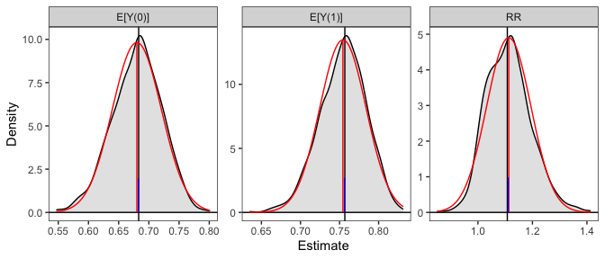

clarify implements simulation-based inference for functions of model parameters, such as average marginal effects and predictions at representative values of the predictors. See the clarify website for documentation and other examples, and see Greifer et al. (2025) for the paper describing the package (also available at vignette("clarify")). clarify was designed to replicate and expand on functionality previously provided by the Zelig package.
Installation
clarify can be installed from CRAN using
install.packages("clarify")You can install the development version of clarify from GitHub with
install.packages("remotes")
remotes::install_github("iqss/clarify")Example
Below is an example of performing g-computation for the average treatment effect on the treated (ATT) after logistic regression to compute the average causal risk ratio and its confidence interval. First we load the data (in this case the lalonde dataset from MatchIt) and fit a logistic regression using functions outside of clarify:
library(clarify)
data("lalonde", package = "MatchIt")
# Fit the model
fit <- glm(I(re78 > 0) ~ treat + age + educ + race + married +
nodegree + re74 + re75,
data = lalonde, family = binomial)Next, to estimate the ATT risk ratio, we simulate coefficients from their implied distribution and compute the effects of interest in each simulation, yielding a distribution of estimates that we can summarize and use for inference:
# Simulate coefficients from a multivariate normal distribution
set.seed(123)
sim_coefs <- sim(fit)
# Marginal risk ratio ATT, simulation-based
sim_est <- sim_ame(sim_coefs,
var = "treat",
subset = treat == 1,
contrast = "RR",
verbose = FALSE)
sim_est
#> A `clarify_est` object (from `sim_ame()`)
#> - Average adjusted predictions for `treat`
#> - 1000 simulated values
#> - 3 quantities estimated:
#> E[Y(0)] 0.6831
#> E[Y(1)] 0.7568
#> RR 1.1078
# View the estimates, confidence intervals, and p-values
summary(sim_est, null = c(`RR` = 1))
#> Estimate 2.5 % 97.5 % P-value
#> E[Y(0)] 0.683 0.592 0.754 .
#> E[Y(1)] 0.757 0.693 0.807 .
#> RR 1.108 0.979 1.289 0.12
# Plot the resulting sampling distributions
plot(sim_est)
Below, we provide information on the framework clarify uses and some other examples. For a complete vignette, see vignette("clarify").
Introduction
Simulation-based inference is an alternative to the delta method and bootstrapping for performing inference on quantities that are functions of model parameters. It involves simulating model coefficients from their multivariate distribution using their estimated values and covariance from a single model fit to the original data, computing the quantities of interest from each set of model coefficients, and then performing inference using the resulting distribution of the estimates as their sampling distribution. Confidence intervals can be computed using the percentiles of the resulting sampling distribution, and p-values can be computed by inverting the confidence intervals. Alternatively, if the resulting sampling distribution is normally distributed, its standard error can be estimated as the standard deviation of the estimates and normal-theory Wald confidence intervals and p-values can be computed. The methodology of simulation-based inference is explained in King, Tomz, and Wittenberg (2000) and Herron (1999).
clarify was designed to provide a simple, general interface for simulation-based inference and includes a few convenience functions to perform common tasks like computing average marginal effects. The primary functions of clarify are sim(), sim_apply(), summary(), and plot(). These work together to create a simple workflow for simulation-based inference.
-
sim()simulates model parameters from a fitted model -
sim_apply()applies an estimator to the simulated coefficients, or to the original object but with the new coefficients inserted -
summary()produces confidence intervals and p-values for the resulting estimates -
plot()produces plots of the simulated sampling distribution of the resulting estimates
There are also some wrappers for sim_apply() for performing some common operations: sim_ame() computes the average marginal effect of a variable, mirroring marginaleffects::avg_predictions() and marginaleffects::avg_slopes(); sim_setx() computes predictions at typical values of the covariates and differences between them, mirroring Zelig::setx() and Zelig::setx1(); and sim_adrf() computes average dose-response functions. clarify also offers support for models fit to multiply imputed data with the misim() function.
In the example above, we used sim_ame() to compute the ATT, but we could have also done so manually using sim_apply(), as demonstrated below:
# Write a function that computes the g-computation estimate for the ATT
ATT_fun <- function(fit) {
d <- subset(lalonde, treat == 1)
d$treat <- 1
p1 <- mean(predict(fit, newdata = d, type = "response"))
d$treat <- 0
p0 <- mean(predict(fit, newdata = d, type = "response"))
c(`E[Y(0)]` = p0, `E[Y(1)]` = p1, `RR` = p1 / p0)
}
# Apply that function to the simulated coefficient
sim_est <- sim_apply(sim_coefs, ATT_fun, verbose = FALSE)
sim_est
#> A `clarify_est` object (from `sim_apply()`)
#> - 1000 simulated values
#> - 3 quantities estimated:
#> E[Y(0)] 0.6831
#> E[Y(1)] 0.7568
#> RR 1.1078
# View the estimates, confidence intervals, and p-values;
# they are the same as when using sim_ame() above
summary(sim_est, null = c(`RR` = 1))
#> Estimate 2.5 % 97.5 % P-value
#> E[Y(0)] 0.683 0.592 0.754 .
#> E[Y(1)] 0.757 0.693 0.807 .
#> RR 1.108 0.979 1.289 0.12
# Plot the resulting sampling distributions
plot(sim_est, reference = TRUE, ci = FALSE)
The plot of the simulated sampling distribution indicates that the sampling distribution for the risk ratio is not normally distributed around the estimate, indicating that the delta method may be a poor approximation and the asymmetric confidence intervals produced using the simulation may be more valid. Note that the estimates are those computed from the original model coefficients; the distribution is used only for computing confidence intervals, in line with recommendations by Rainey (2023).
If we want to compute the risk difference, we can do that using transform() on the already-produced output:
#Transform estimates into new quantities of interest
sim_est <- transform(sim_est, `RD` = `E[Y(1)]` - `E[Y(0)]`)
summary(sim_est, null = c(`RR` = 1, `RD` = 0))
#> Estimate 2.5 % 97.5 % P-value
#> E[Y(0)] 0.6831 0.5925 0.7543 .
#> E[Y(1)] 0.7568 0.6934 0.8067 .
#> RR 1.1078 0.9789 1.2888 0.12
#> RD 0.0737 -0.0155 0.1742 0.12We can also use clarify to compute predictions and first differences at set and typical values of the predictors, mimicking the functionality of Zelig’s setx() and setx1() functions, using sim_setx():
# Predictions across age and treat at typical values
# of the other predictors
sim_est <- sim_setx(sim_coefs,
x = list(age = 20:50, treat = 0:1),
verbose = FALSE)
#Plot of predicted values across age for each value of treat
plot(sim_est)
See vignette("Zelig", package = "clarify") for more examples of translating a Zelig-based workflow into one that uses clarify to estimate the same quantities of interest.
clarify offers parallel processing for all estimation functions to speed up computation. Functionality is also available for the analysis of models fit to multiply imputed data. See vignette("clarify") for more details.